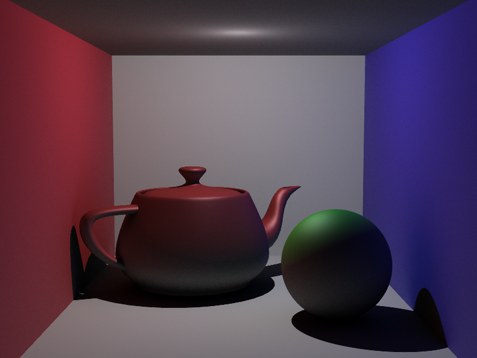
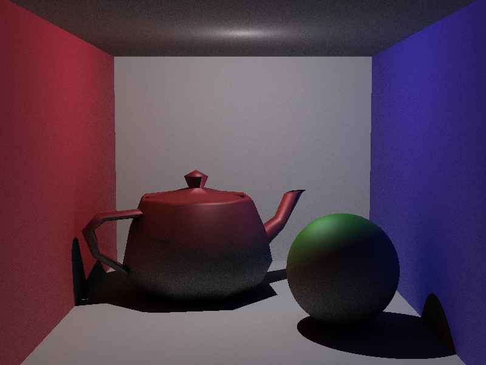
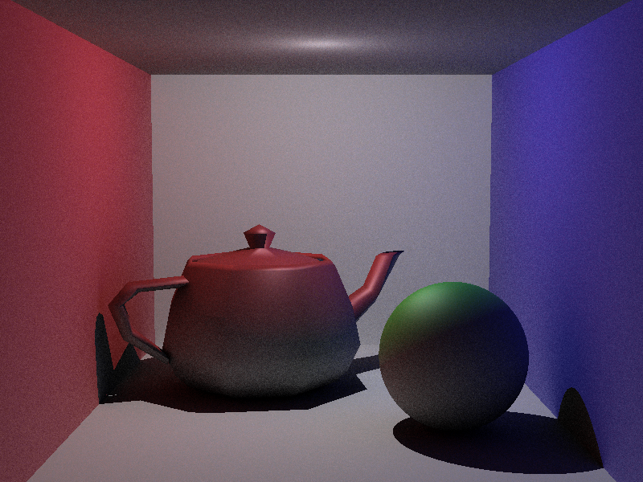
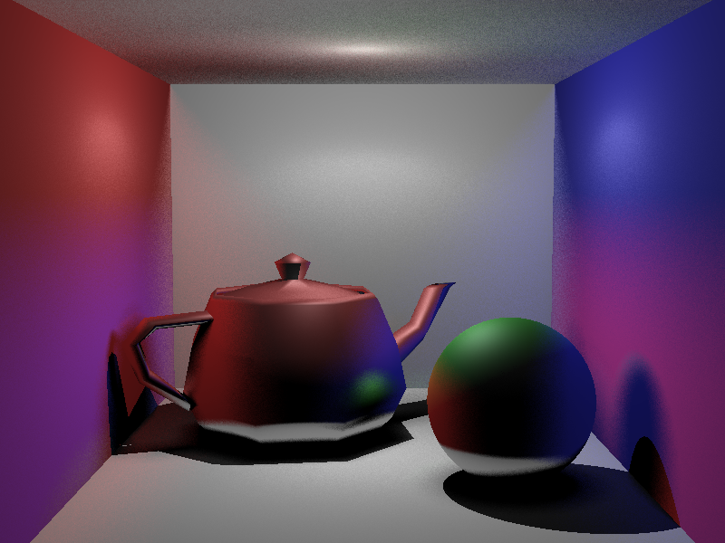

CS6620 - Ray Tracing for Graphics
Project 11 - Monte Carlo Sampling.
Results
Rendered in 5:54:10 with eight threads,four bounces, and 500 global illumination rays.

This is what the image looked like when cosine weighting was added with 50 global illumination rays.

This is what the image looked like before cosine weighting was added with 50 global illumination rays.

Machine Specs
Running Windows 10 on a Bootcamped MacBook Pro
| Processor |
Intel Core i7 2.50 GHz |
| RAM |
16GB 1600 MHz DDR3 |
| Graphics Card |
Intel Iris Pro 1536 MB |
Project Stumbling Blocks
I had not implemented hemispherical sampling correctly, and when I rendered my image this is what I got.
